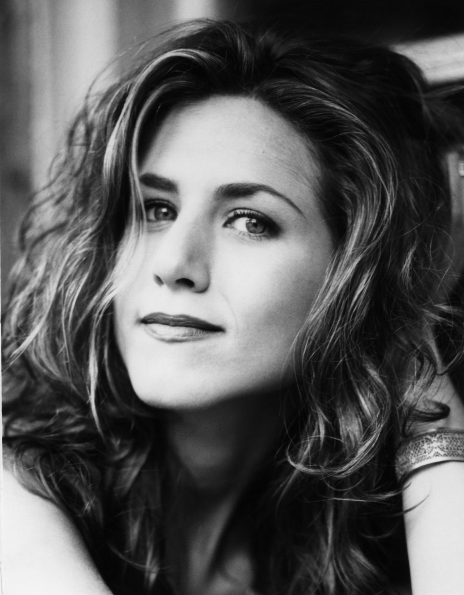
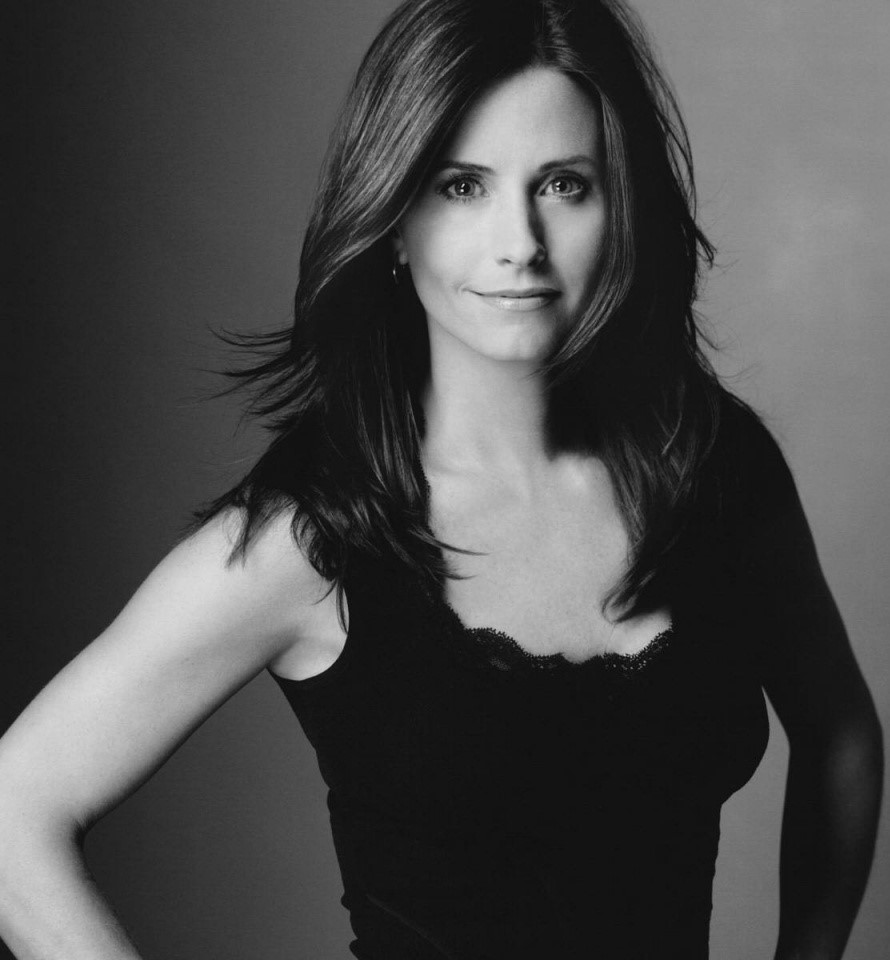
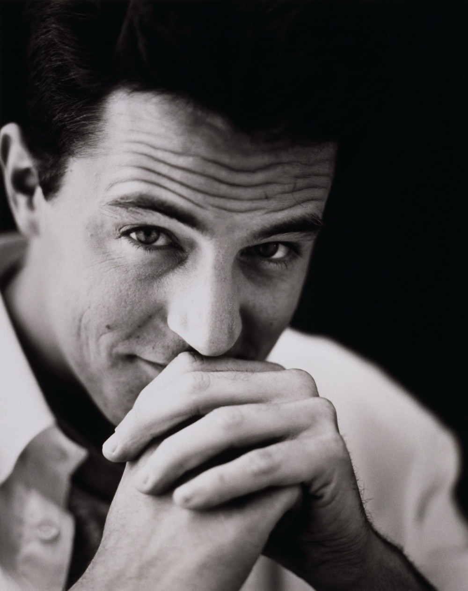

Rachel is a very complicated character. She gets her energy from interacting with her friends because she doesn’t like to be on her own. She cares about trends and her appearance in the minds of others, which leads her to be constantly aware of her surroundings. She works in the fashion industry so it’s only natural for her to act this way. Rachel thinks with her heart, which, like Ross, means that she easily gets hurt when it comes to relationships. She cares deeply for her friends and pays attention to their emotions.
After Rachel leaves Barry at the altar, her life becomes extremely spontaneously and out of control because she has to learn how to survive without her dad’s money. She begins to gain some order when she achieves a steady job at Bloomingdales and then Ralph Lauren.
Rachel has a somewhat low conscientiousness because she is easily distracted and tends to leave things around or forget things. Monica specifically will not let her borrow anything because she knows that Rachel will lose it. Towards the end of the series, Rachel becomes more conscientious, however, when she gives birth to Emma and must become more organized and reliable in order to take care of her daughter.
Monica definitely draws her energy from others and her constant desire to control and manage her friends’ actions. Rachel even puts her in charge of her love life, which Monica happily takes on because of her personal belief that she knows more about Rachel than Rachel herself does. Details define everything for Monica, and this causes her to make most of her decisions with her head through logic and reason. As a head chef, she is very in control and detail-oriented. More than anything, Monica thrives on order and schedules; you will never see the apartment out of order or dirty while she is there. (In fact, many criticize her for being a slightly obsessive compulsive.) Organizing projects comes very naturally to her, and you can bet that she will get the best results in the most efficient way, even if it means through force.
Monica is highly conscientiousness because she is incredibly organized and persistent. She will do whatever it takes to achieve top marks for anything she takes on. (Her competitive side definitely comes out during the Geller Family Thanksgiving Football Game.) You can always count on Monica to get the job done.
Phoebe is one of those people who could talk to anyone about anything. She gets her energy through talking and singing about the abstract ideas and theories she comes up with. Her imagination is incredible- just listen to any one of her songs or take a trip in her own doll house she created out of shoe boxes complete with a slide, a licorice room, an aroma room and a bubble machine. Like Chandler, she is very spontaneous in all aspects of her lifestyle. While she doesn’t have a stable job or love life, it seems to work well for her because she’s more interested in living impulsively than by an ordered routine.
Phoebe has an incredibly high openness to experience because her creativity and curiousness drive her actions and way of life. She’s interested in adventure and trying new things even if they may be unusual. Her high openness to experience has helped her overcome her homelessness, find her father and, eventually, find love and marriage with Mike.
As the only introverted character, Ross is somewhat shy and keeps to himself- especially during his college years when interacting with Rachel, his secret crush. He is thorough and remembers specifics about certain individuals because he values loyalty. He tends to make decisions with his heart, which leads to emotional pain and heartache most of the time (just review his three failed marriages and his relationship rollercoaster with Rachel.) He likes to have an orderly and harmonious environment because of his dislike for conflict.
Thus, it is no surprise that Ross is highly agreeable, as demonstrated by his compassion, trust and generosity. He is very willing to compromise his own personal interests for those of others. In fact, Monica sometimes criticizes him for being their parents’ favorite child because he always tried to please them with his highly agreeable tendencies.
Chandler’s quite outspoken with his quick, sarcastic quips as he constantly jokes around and pokes fun of his friends. He always seems to have some unusual ideas brewing in his mind that stem from external factors and he likes to focus on what the future holds, choosing to avoid his past and family life. Chandler is smart (he works for a large corporation doing statistical analysis and data reconfiguration, whatever that is) so he tends to make decisions based on logic or reason. He is probably one of the most spontaneous characters out of the group because he seems to get bored with order and routine. He constantly jumps around with his relationships and jobs. His relationship with Janice is on and off throughout most of the seasons of the show.
He has relatively low emotional stability because of his mother’s and father’s occupations. (His mother is an erotic novelist and his father is a cross-dresser in Las Vegas.) His parents have left him emotionally scarred and immature when it comes to developing his own relationships. (They told him they were getting divorced on Thanksgiving…) When nervous in social situations, Chandler turns to humor to avoid dealing with real emotions because he is so insecure.
Joey could not be a more extroverted individual. He constantly thrusts himself into new social situations because of his occupation as an actor. He is very comfortable with talking to others, even though what he says may not make any sense. This is probably due his tendency to prefer abstract and theoretical way of processing information. Emotions definitely drive Joey’s actions and he dislikes conflict, especially within his friend group. (Remember when he wrote a script for Chandler and Ross to read aloud to quell their fight concerning how to help Joey get his creative writing juices flowing?) Joey is the epitome of spontaneity. Simply put, there is no order in Joey’s life whatsoever.
Joey is highly extroverted because he thrives on human interaction, whether it’s on stage or in Central Perk. He’s always full of energy and likes to think of himself as the life of any party.